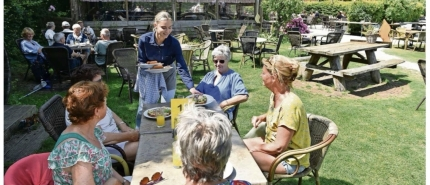
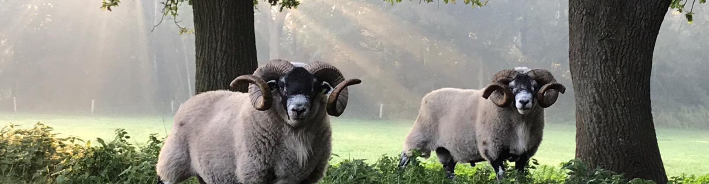
Kruisberg 4A, Heemskerk
“Natuurlijk” genieten
Een gasterij vol knusse, speelse plekjes tussen de dieren. Met burgers, kroketten, ossenworst en soep van Highlanders van eigen farm.
Woensdag t/m zondag open
9.00 – 17.00 · april t/m september za en zo tot 18.00
Zo werkt het bij ons
Reserveren is niet mogelijk. Je kiest pas bij aankomst waar je gaat zitten, en dat is juist het leuke.
- 1
Zoek een plekje
Binnen, op het terras, in een tonnetje of tussen de dieren: kies waar je zin in hebt.
- 2
Bestel aan de bar
Je drinken neem je direct mee naar je plek.
- 3
Wij brengen je eten
Lieve gasten, soms is het even wachten. Geniet en onthaast!
Knus, speels en vol dieren
Bij Gasterij Kruisberg zijn veel plekken om te zitten, het ene nog knusser dan het andere. Op het terras, binnen onder de houten balken bij de bar, of in een tonnetje in de tuin.
Het rundvlees voor onze hamburgers, ossenworst, kroketten en soep komt van onze eigen farm. De runderen begrazen het Noord-Hollands Duinreservaat. Biologischer kan bijna niet.
Meer over onze farm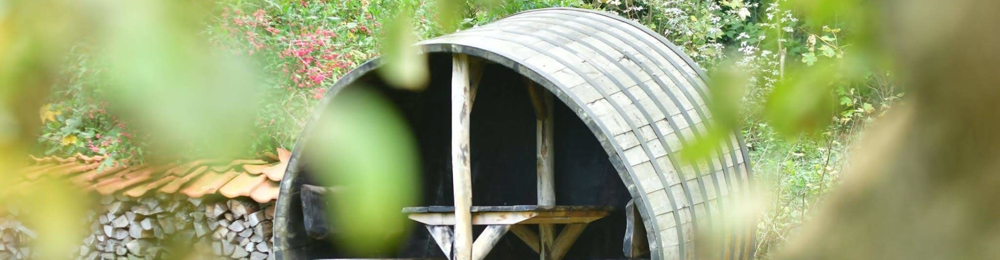
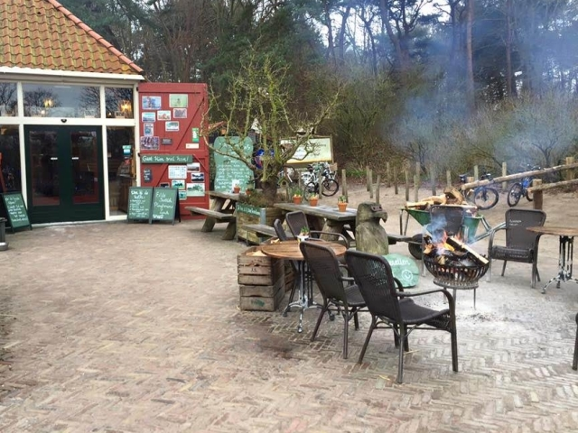
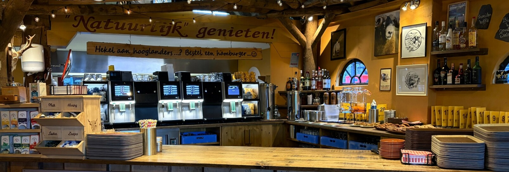
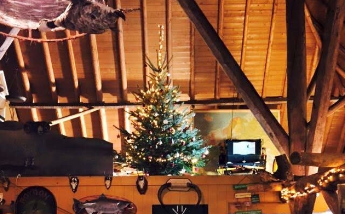
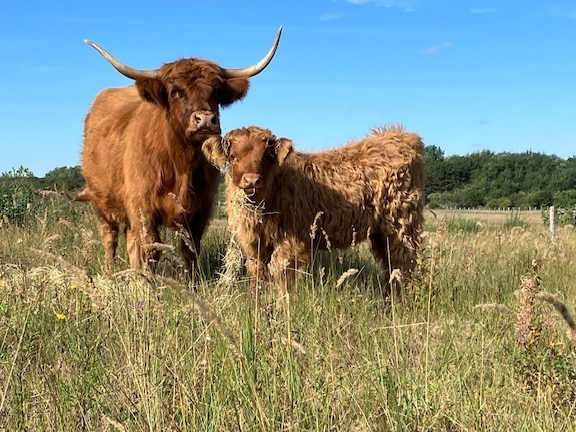
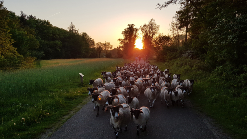
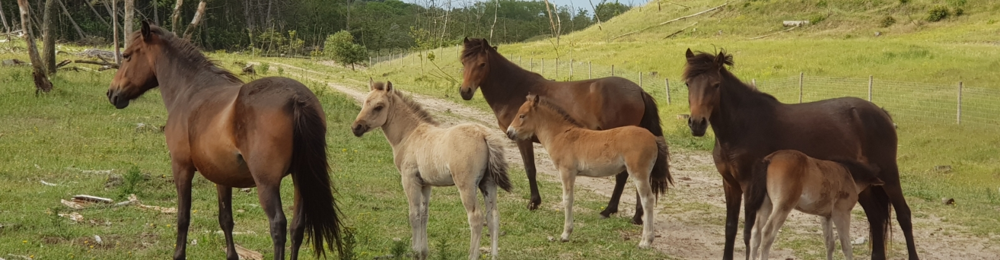
Crosshill natuurbegrazing
Onze ruim 750 beesten begrazen in opdracht van PWN zo'n 1200 hectare duin tussen Wijk aan Zee en Castricum.
Dat doen twee professionals, vier vrijwilligers en vijf border collies. In de kudde lopen Schotse Hooglanders, Scottish Blackface-schapen, Hollandse landgeiten en Exmoor pony's. Het vlees van de Highlanders proef je in de gasterij: van burger tot kroket.
- 750+beesten in het duin
- ±1200 haduin, Wijk aan Zee tot Castricum
- 5border collies aan het werk
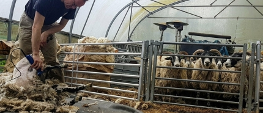
Schapen-demo's en schapenworkshops
Zie de border collies aan het werk bij een schapen-demo, of doe mee met een schapenworkshop. Vraag aan de bar of mail ons voor de mogelijkheden.
Mail over een workshopNieuws uit de gasterij
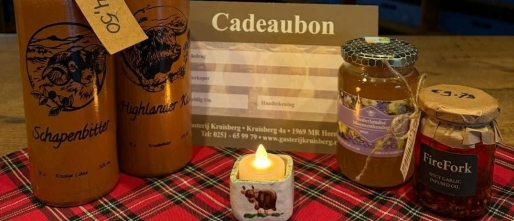
Even snel een cadeautje
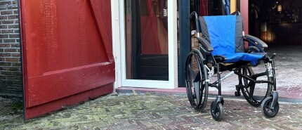
Slecht ter been? Dit helpt misschien
Nu ook Highlanderkroketten van eigen farm
Zo vind je ons
Let op: zet je routeplanner op parkeerplaats Kraaiennest.
Veel routeplanners sturen je naar een verkeerde duiningang. Vanaf parkeerplaats Kraaiennest wandel je naar de gasterij.
Gasterij Kruisberg
Kruisberg 4A
1969 MR Heemskerk
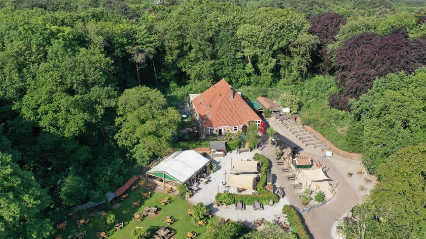
Openingstijden
Het hele jaar open
- Woensdag t/m zondag
- 9.00 – 17.00
- April t/m september, za en zo
- 9.00 – 18.00
- Maandag en dinsdag
- gesloten
- Eerste en tweede paasdag, pinksterdagen
- 9.00 – 18.00
- Kerstdagen, oudejaars- en nieuwjaarsdag
- 9.00 – 16.00
De keuken sluit een half uur voor sluitingstijd. Bij extreem slecht weer kunnen we eerder dicht gaan.
Contact
0251 659 979 info@gasterijkruisberg.nlWerken bij Gasterij Kruisberg
We zoeken een medewerker bar en bediening voor 3 à 4 dagen per week, ook elk weekend. Minimaal 18 jaar, marktconform salaris. Bel of mail met eigenaar Hans Logchies.
Reageer op de vacature